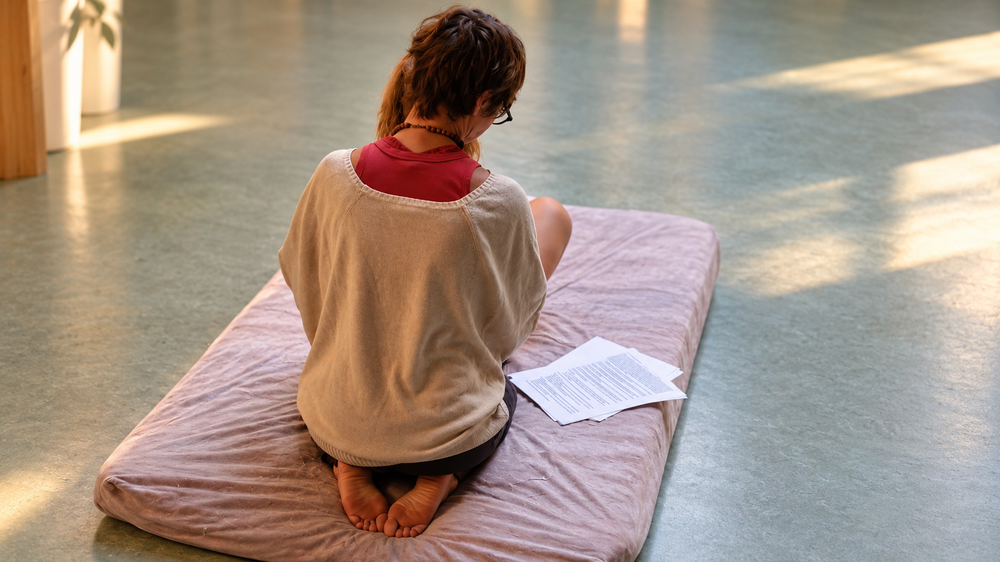

Shiatsu et cancer : quelle place dans les soins oncologiques de support ?
Accompagner une personne touchée par un cancer ne consiste pas à appliquer un protocole. Son corps traverse la maladie, les traitements, la fatigue, parfois la douleur, mais aussi une profonde modification de son quotidien et de la relation qu'elle entretient avec elle-même. Dans ce parcours, le Shiatsu peut trouver une place complémentaire, à condition de savoir observer, adapter son toucher et respecter le cadre médical.
Depuis plus de vingt ans que je pratique le Shiatsu et la Médecine Traditionnelle Chinoise, une conviction guide ma pratique et mon enseignement :
Avant le geste, il y a la personne.
Et lorsqu'il s'agit d'oncologie, cette phrase prend encore davantage de sens.

Formation Shiatsu — observation, apprentissage et adaptation du geste. École de Shiatsu & MTC Guylaine Juan.
Le Shiatsu ne traite pas le cancer
Commençons par une distinction essentielle.
Le Shiatsu n'est pas un traitement du cancer. Il ne remplace en aucun cas la chirurgie, la chimiothérapie, la radiothérapie, l'hormonothérapie, l'immunothérapie ou tout autre traitement prescrit par l'équipe médicale.
Il peut en revanche s'inscrire, lorsque la situation individuelle le permet, dans une démarche complémentaire de bien-être et d'accompagnement.
L'Institut national du cancer définit les soins oncologiques de support comme des soins et soutiens nécessaires aux personnes malades tout au long de leur parcours, en complément des traitements spécifiques contre le cancer.
En septembre 2026, l'Institut national du cancer a publié son nouveau cahier des charges national consacré à la qualité de l'offre en soins oncologiques de support. Ce référentiel concerne aussi bien les structures hospitalières que les structures de ville et les professionnels. Il définit des critères de qualité et inclut les formations requises.
C'est dans cette logique d'accompagnement — et non de traitement de la maladie — que le Shiatsu peut trouver sa place.
Le Shiatsu est déjà proposé dans certains parcours d'accompagnement en cancérologie
Il ne s'agit pas uniquement d'une pratique rencontrée dans des cabinets privés.
Des comités de la Ligue contre le cancer proposent des séances de Shiatsu dans le cadre de leurs activités destinées aux personnes touchées par le cancer.
Cette présence ne signifie évidemment pas que le Shiatsu soigne le cancer. Elle montre en revanche que le toucher et la relaxation peuvent trouver une place auprès de certaines personnes dans une approche complémentaire aux soins médicaux.
Pourquoi le toucher peut-il avoir une place particulière pendant un cancer ?
Pendant un parcours oncologique, le corps devient souvent le centre d'une succession d'examens, de traitements et d'interventions.
- Prises de sang.
- Imagerie.
- Chirurgie.
- Perfusions.
- Radiothérapie.
- Examens médicaux.
À force d'être observé, examiné et soigné, le corps peut parfois sembler n'être plus qu'un corps médicalisé.
Le Shiatsu propose un toucher d'une autre nature.
Un temps où l'objectif n'est pas d'examiner une tumeur ou d'administrer un traitement, mais d'accompagner la personne dans un moment de présence, de détente et de reconnexion avec ses sensations corporelles.
Selon les personnes et leur situation, une séance peut notamment être recherchée pour favoriser la relaxation, apporter du confort ou permettre un relâchement des tensions.
La Ligue contre le cancer des Hautes-Alpes, dans sa présentation des séances de Shiatsu proposées aux personnes touchées par le cancer, évoque notamment la fatigue, les nausées, les troubles digestifs et certaines sensations inhabituelles dans les membres.
Ces éléments décrivent le cadre dans lequel ces séances sont proposées ; ils ne constituent pas la preuve que le Shiatsu traite la cause de ces symptômes.
Accompagner le vécu d'un symptôme ne signifie pas traiter sa cause.
Que dit aujourd'hui la recherche sur le Shiatsu en oncologie ?
La recherche consacrée spécifiquement au Shiatsu en oncologie reste encore limitée.
Une étude publiée en 2026 dans l'International Journal of Therapeutic Massage & Bodywork a évalué 66 séances de Heisei Shiatsu réalisées auprès de 55 patients hospitalisés atteints de cancer, en complément de leur traitement antalgique.
Juste après la séance, les patients ont rapporté une diminution moyenne de 40 % de l'intensité de leur douleur ; 32 % ont déclaré un soulagement complet et 45 % un soulagement majoritaire. Presque tous ont également évoqué les effets relaxants et apaisants des séances.
Ces résultats sont encourageants mais doivent être interprétés avec prudence : il s'agit d'une évaluation de service portant sur un petit nombre de patients, sans groupe témoin, et l'auteur précise lui-même que l'échantillon ne permet pas de tirer de conclusions définitives.
Cette étude invite donc surtout à poursuivre les recherches sur le Shiatsu dans le contexte oncologique, notamment sur sa sécurité.
En oncologie, il ne peut pas exister un protocole unique
Deux personnes peuvent recevoir un même diagnostic médical et pourtant arriver devant le praticien dans des situations totalement différentes.
- L'une peut être extrêmement fatiguée.
- Une autre particulièrement tendue.
- Une troisième peut être en période de récupération après une intervention.
- Une autre encore peut suivre une chimiothérapie, une radiothérapie, une hormonothérapie ou une immunothérapie.
Le moment du traitement, l'état général, les effets indésirables éventuels, une intervention récente, la présence de douleurs et les recommandations de l'équipe médicale peuvent modifier complètement la manière dont une séance doit être envisagée.
Une séance la veille d'une chimiothérapie ne se conduit pas comme une séance le lendemain, ni comme une séance une semaine plus tard.
C'est pourquoi, dans ma pratique et dans mon enseignement, je ne conçois pas le Shiatsu comme l'application automatique d'un protocole associé au nom d'une maladie.
On ne travaille pas sur un cancer. On accompagne une personne.
Avant de poser les mains, il faut savoir questionner
Un praticien correctement formé ne commence pas sa séance simplement parce qu'il connaît une série de points ou un méridien.
Il commence par écouter et observer.
- Quel traitement la personne reçoit-elle ?
- À quel moment de son parcours se trouve-t-elle ?
- Y a-t-il eu une intervention chirurgicale récente ?
- Existe-t-il une douleur nouvelle ou inhabituelle ?
- Certaines zones doivent-elles être évitées ?
- L'équipe médicale a-t-elle donné des recommandations particulières ?
- Comment est l'état général de la personne aujourd'hui ?
Et surtout : existe-t-il un élément qui doit conduire le praticien à ne pas intervenir et à orienter la personne vers son équipe soignante ?
Savoir ne pas faire fait également partie de la compétence.
Chimiothérapie, radiothérapie, hormonothérapie, immunothérapie : comprendre le contexte
Les traitements du cancer ont considérablement évolué.
Parler aujourd'hui d'accompagnement en oncologie suppose donc de comprendre au minimum le contexte thérapeutique dans lequel se trouve la personne.
- Une chimiothérapie n'est pas une immunothérapie.
- Une hormonothérapie n'est pas une radiothérapie.
Une personne quelques jours après une intervention chirurgicale ne se trouve pas dans la même situation qu'une personne plusieurs mois après la fin de ses traitements.
Le praticien de Shiatsu n'a pas à prescrire, modifier ou interpréter un traitement médical.
En revanche, il doit disposer des connaissances nécessaires pour adapter sa pratique, reconnaître les limites de son intervention et orienter vers les professionnels de santé lorsque la situation l'exige.
Bilan avant le Geste
C'est précisément pour cette raison que j'ai construit mon enseignement autour d'un principe :
Bilan avant le Geste.
Je ne souhaite pas former des praticiens qui mémorisent simplement des protocoles.
- Je veux leur apprendre à regarder.
- À écouter.
- À questionner.
- À mettre en relation ce qu'ils observent.
- À comprendre pourquoi ils choisissent une technique plutôt qu'une autre.
- Et à savoir quand ils doivent s'abstenir.
La Médecine Traditionnelle Chinoise et le Shiatsu nous offrent une grille de lecture du terrain et de la personne. Mais cette lecture ne doit jamais nous faire oublier le diagnostic, les traitements et le suivi médical lorsqu'une pathologie grave est présente.
Les deux approches n'ont pas à s'opposer.
Elles n'ont simplement pas le même rôle.
Accompagner sans promettre
Dans le domaine des pratiques complémentaires, il peut être tentant d'utiliser de grandes promesses.
En oncologie, notre responsabilité impose au contraire d'être particulièrement précis.
Nous n'avons pas besoin de promettre de guérir pour être utiles.
- Être présent.
- Adapter son toucher.
- Respecter le rythme de la personne.
- Lui offrir un espace où son corps peut être approché autrement.
- Savoir entendre ce qu'elle nous dit.
- Mais également reconnaître ce que son état nous demande de ne pas faire.
- Et rester à notre juste place, aux côtés du parcours médical.
C'est déjà beaucoup.
Après plus de vingt ans de pratique du Shiatsu et de la Médecine Traditionnelle Chinoise et plus de dix ans d'enseignement, c'est cette exigence que je souhaite aujourd'hui transmettre aux professionnels que je forme.
Parce qu'un bon praticien ne se reconnaît pas au nombre de protocoles qu'il connaît. Il se reconnaît aussi à sa capacité à comprendre avant de poser les mains.
Guylaine Juan
Praticienne en Shiatsu et Médecine Traditionnelle Chinoise depuis plus de 20 ans
Enseignante depuis plus de 10 ans
Fondatrice — Guylaine Juan, École de Shiatsu & MTC
Sources
Institut national du cancer (2026).
Qualité de l'offre en soins oncologiques de support – Cahier des charges national.
Collection Recommandations et référentiels. Référence : REFQUALITESOS26.
Publication : 20 septembre 2026.
Consulter la publication de l'Institut national du cancer
Cabo F. (2026).
A Service Evaluation of Heisei Shiatsu Massage as an Adjunct to the Pharmacological Management of Cancer Pain.
International Journal of Therapeutic Massage & Bodywork, 19(1), 33–46.
DOI : 10.3822/ijtmb.v19i1.1207. PMID : 41778078.
Consulter l'étude sur PubMed
Ligue contre le cancer — Comité des Hautes-Alpes.
Shiatsu.
Consulter la page Shiatsu de la Ligue contre le cancer